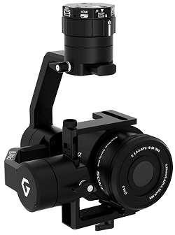
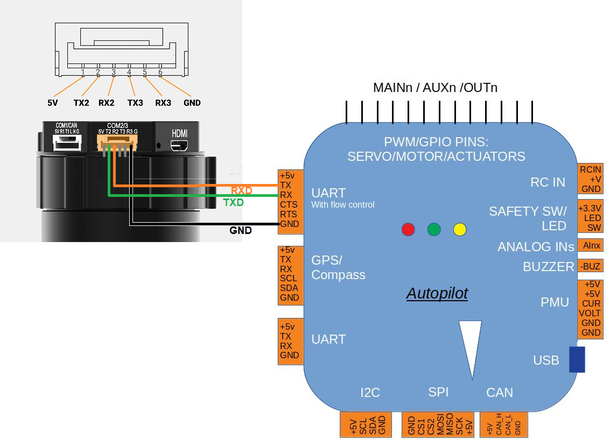

Gremsy Mio, Pixy, S1, T3, T7, and ZIO 3-Axis Gimbals¶
Gremsy Mio, Pixy F, Pixy U, Pixy WP, S1, T3, T7 and ZIO 3-axis gimbals can communicate with the autopilot using the MAVLink protocol and are compatible with a range of cameras for real-time video or mapping purposes.
Warning
MIO gimbals are unable to communication with ArduPilot. We hope for a fix with Gremsy software version 7.7.3. T3V3 gimbals must be running 7.7.3-Preview (or higher).
Where to Buy¶
These gimbals can be purchased from the Gremsy store
Connecting to the Autopilot (4.3 or higher)¶
If using ArduPilot 4.3 (or higher) please follow these setup instructions
{kind=link}
Connect the gimbals’s COM2 port to one of the autopilot’s Serial/Telemetry ports like Telem2 as shown above.
Connect to the autopilot with a ground station and set the following parameters, if using the first mount:
MNT1_TYPE to “6” for “Gremsy” and reboot the autopilot
SERIAL2_BAUD to “115” for 115200 bps. “SERIAL2” can be replaced with another serial port (i.e. SERIAL1) depending upon the physical connection
SERIAL2_PROTOCOL to 2 for “MAVLink2”
SERIAL2_OPTIONS to 1024 for “Don’t forward mavlink to/from”
See the “Control with an RC transmitter” section of this page for details on parameter changes required to control the gimbal through an RC Transmitter (aka “RC Targeting”)
When the autopilot has successfully connected to the gimbal, “Mount: GREMSY PixyU fw:7.7.1.0” (or similar) will be sent to the ground station. Looking for this message may be useful in determining if the autopilot and gimbal are communicating successfully.
Configuring the Gimbal¶
Download and install gTune Desktop
Connect the gimbal to your Desktop PC using a USB cable and power on the gimbal
Use gTune Desktop to check the gimbal firmware version
Open gTune Desktop application, “Found your device” should be displayed
Select “CONNECT”
Select “INFO” and confirm the gimbal is running Firmware “7.7.1” or higher
If the gimbal firmware is older than 7.7.1 download the latest .hex for Mio, Pixy F, Pixy U, Pixy WP, S1, T3, T7 or ZIO
Select “UPGRADE”, “BROWSE” and select the file downloaded above
Press the other “UPGRADE” button and the upgrade should complete within 30 seconds
Use gTune Desktop to configure the gimbal
Select “SETTINGS”, “CONTROLS” and ensure “SYNC” is selected so the gimbal communicates with the autopilot using MAVLink
Select “Settings”, “REDUCE DIRFT by DRONE”
Select the “STIFFNESS” tab and adjust the Tilt, Roll, and Pan gains so that the gimbal holds the camera in position without shaking
{kind=link}
{kind=link}
{kind=link}
{kind=link}
Control and Testing¶
See Gimbal / Mount Controls for details on how to control the gimbal using RC, GCS or Auto mode mission commands
Connecting Two Gimbals¶
If two Gremsy gimbals are used, each gimbal can be directly connected to one of the autopilot’s serial ports or they can can be daisy-chained together with only one connected to one of the autopilot’s serial ports.
{kind=link}
Connecting to the Autopilot (4.2 or earlier)¶
We recommend connecting the Gimbals’s COM2 port to one of the autopilot’s Serial/Telemetry ports like Telem2 as shown above.
Connect with a ground station and set the following parameters, if using the first mount:
MNT1_TYPE to “4” for “SToRM32 MavLink” and reboot the autopilot
SERIAL2_BAUD to “115” for 115200 bps. “SERIAL2” can be replaced with another serial port (i.e. SERIAL1) depending upon the physical connection
SERIAL2_PROTOCOL to 2 for “MAVLink2”
SR2_EXTRA1 to 10
SR2_POSITION to 10
The gimbal’s maximum angles can be set using these parameters (shown for the first mount):
MNT1_ROLL_MIN to -30 to allow leaning left up to 30deg
MNT1_ROLL_MAX to 30 to allow leaning right up to 30deg
MNT1_PITCH_MIN to -90 to allow pointing 90deg down
MNT1_PITCH_MAX to 30 to allow pointing 30deg up
MNT1_YAW_MIN to -180 to allow turning around to the left
MNT1_YAW_MAX to 180 to allow turning around to the right
To control the gimbal’s lean angles from a transmitter set the RC controls for roll, pitch, or yaw using RCx_OPTION 212 (Mount1 Roll), 213 (Mount1 Pitch), 214 (Mount1 Yaw) for the first mount, or 215-217 for the second mount, respectively.
Gremsy’s instructions can be found below: